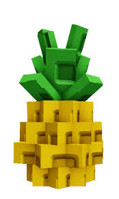
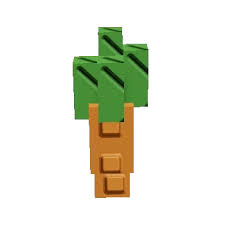

|
A Mango produce is characterized as a red-yellow gradient object with a stick connected to a green leaf covering the upper part of the produce. Its seed is orange-yellow, and its crop/plant has a trunk with multiple branches, all of them a brownish color. It also features cubes of leaves which range in color from red to yellow and orange. |

The Pineapple is characterized as having a yellow body with a green, leafy crown at the top of the produce. |

The Carrot seed is a solid orange color with a leafy green color on top. The Carrot crop is a carrot's head, having the other portion buried in the ground, with four leaves sticking upwards. The Carrot produce is similar to the crop, displaying the whole carrot instead. |